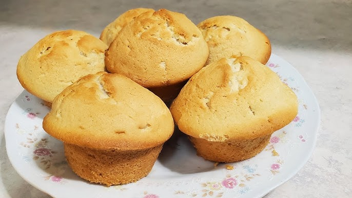

Golden Crust
Pan Royal
Ingredientes:
1 1/2 libra de harina
3 onzas de manteca
3 onnzas de margarina
12 onzas de azúcar
1/4 de onza de sal
1 onza de levadura
4 huevos
1 onza de polvo para hornear
1/2 cucharadita de canela en polvo
2 1/2 onzas de agua

Golden Crust
Cubiletes
Ingredientes:
1 libra de harina suave
5 onzas de azúcar
1/4 onza de sal
1/2 onza de P.P.H
5 huevos
5 onzas de margarina o (manteca)
5 onzas de agua
Golden Crust
Champurrada Integral
Ingredientes:
14 onzas de harina suave
2 onzas de afrecho
1/2 onza de P.P.H.
8 onzas de azúcar
1/4 onza de sal
4 onzas de aceite o manteca
1/2 onza de leche en polvo
1 huevo
3 onzas de agua